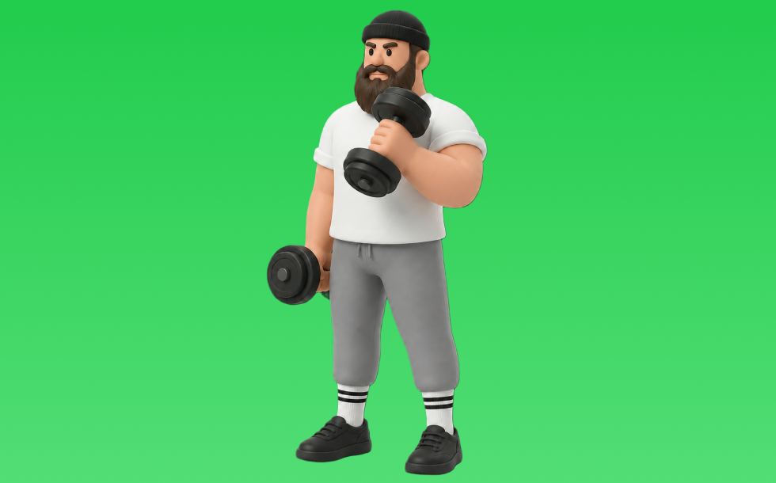

ハンマーカール

ハンマーカールとは、ダンベルを使って「膝を曲げる」動作で腕（上腕二頭筋）、前腕を鍛える種目です。可動域が広く、左右のバランスを整えやすいのが特徴で、かかとを引き寄せて収縮し、ゆっくり戻す動作を繰り返します。腕の太さづくりや引く力の補強が期待できます。
- 対象部位
- 腕
- 器具
- ダンベル
- 記録形式
- 重量・回数
- 別名
- ハンマー
YouTube動画
-
【初心者向け】ハンマーカール の正しいフォーム
-
【上腕二頭筋トレ】ハンマーカールの正しいフォーム・やり方をご紹介 | 前腕・長頭を狙った腕を太くするトレーニング！
-
【初心者】ダンベル・ハンマーカールの正しいやり方 | 太い前腕をつくる重要種目【ビーレジェンド プロテイン】
-
腕を太くするハンマーカールの正しいやり方【ヘイキ先生解説】
-
【筋トレ】ハンマーカールの正しいやり方
-
【カッコイイ腕を造る】ハンマーカールを徹底解説！
-
腕が太くなる！上腕筋を狙うケーブルハンマーカールの正しいフォームとは？
-
【上腕筋】ハンマーカール の やり方 と 注意点 を紹介！腕の厚みと形を作る【筋トレ】
-
上腕二頭筋の筋肥大に最も良い種目は？【二頭筋のティアリスト】
-
【ハンマーカール】上腕二頭筋の長頭に効かせるには片方ずつが効果的！重量、回数なども解説
-
腕を太くしたい人に１番オススメの最強種目をガチ解説。
-
【腕を太くする】どうやって鍛えれば力こぶが高くなる？ 上腕筋を鍛えるハンマーカールのやり方も解説！【筋トレ】
-
【世界一わかりやすい】ダンベル基本5種目をボディビル世界チャンプが丁寧に解説｜初心者でもう迷わない腕トレのフォームとコツ。
YouTubeショート
-
【よくある間違いハンマーカール】#筋トレ #ダイエット #新座市 #志木市 #朝霞市
-
ハンマーカールを100回した結果【世界の筋肉】
-
ハンマーカールのやり方#初心者 #ジム #腕トレ
-
皆さんはハンマーカールやってますか？持田選手（おかずもち）が二頭筋がめちゃくちゃ肥大するを腕トレレクチャーしてくれました！#筋トレ #volix #上腕二頭筋 #ちょこっと惜しい #腕トレ
-
みなさんはハンマーカールやってますか？持田選手とコロチキの西野創人さんが上腕二頭筋に効くトレーニングをレクチャーしてくれました！#筋トレ #volix #上腕二頭筋 #ちょこっとおしい #腕トレ
-
【腕トレ解説】インクライン・ハンマーカール #筋トレ解説 #腕トレ #腕トレーニング
-
絶対に腕が太くなる正しいハンマーカールの方法！ Hammer curl #shorts #筋トレ #自宅トレーニング #腕トレ #workout #homeworkout #fitness
-
前腕を太くする方法 #筋トレ #トレーニング #ホームトレーニング #ホームトレーニー #筋肉 #ボディビル #フィジーク
-
【極太確定】ハンマーカール正しいやり方 #腕トレ #筋トレ初心者
-
持田選手にケーブルとダンベルを使用したハンマーカールについてレクチャーしていてもらいました！次はどの種目の解説をやってほしいかコメントしてね！#筋トレ #volix #トレーニング #ちょこっと惜しい
-
上腕二頭筋のおすすめ種目3つを紹介【筋トレ】
-
持田選手（おかずもち）に上腕二頭筋を大きくするためのインクラインハンマーカールについてレクチャーしていてもらいました！#筋トレ #volix #上腕二頭筋 #ちょこっと惜しい #腕トレ
-
【よくある間違いケーブルハンマーカール】 #筋トレ #ダイエット #志木市 #新座市 #朝霞市 #パーソナルジム #大泉学園 #東久留米 #ケーブルハンマーカール
-
【アームカールの正しいやり方】理想と間違い#仙台パーソナルジム#仙台ジム#筋トレ初心者#筋トレ#ボディビル#ボディメイク#パーソナルトレーナー
-
【ダンベル】腕トレ４選 #筋肉
-
ハンマーカール、握り方を変えるだけで怪我を防げるって知ってた？
-
皆さんはインクラインハンマーカールやってますか？持田選手が二頭筋がめちゃくちゃ肥大するを腕トレレクチャーしてくれました!#筋トレ #volix #上腕二頭筋 #ちょこっと惜しい #腕トレ
-
【ダンベルハンマーカール解説】 #status
-
腕が絶対に太くなる！アームカールの正しい方法！#shorts #筋トレ #fitness
-
みなさんはケーブルハンマーカールやってますか？持田選手とこんがりさんが前腕に効くトレーニングをレクチャーしてくれました！#筋トレ #volix #前腕トレ #ちょこっと惜しい #上腕二頭筋
-
最も効果のある上腕二頭筋の種目3選 #フィットネス #筋トレ
-
みんなハンマーカールできてる？髙山（たかやま）がハンマーカールのやり方をレクチャーしてくれました！今日からやってみてや！#筋トレ #たかやま #腕トレ #アームカール
-
２頭筋が太くなるアームカールのやり方。
-
【筋トレ初心者必見 ! |ダンベルコンセントレーションハンマーカールのやり方】日本人初ミスター・オリンピアに出場した、山岸プロが解説！ #山岸秀匡 #筋トレ初心者 #ハンマーカール 続きはコメ欄!
-
【トレーニング紹介】ケーブルハンマーカール #筋トレ #ダイエット #腹筋
-
【100%知るだけで変わる】アームカールとハンマーカールの聞き方とフォーム。#shorts #筋トレ #motivation #workout #diet #ダイエット
-
ハンマーカール13kgで上腕二頭筋を鍛えてゆく #トレーニング #筋肉 #筋トレ
-
腕を太くする為にやるべき種目を伝授。#shorts
-
こんなバーベルカールはやめろ！正しいフォーム解説 #筋トレ
-
【よくある間違いインクラインダンベルカール】 #ダイエット #筋トレ #新座市 #志木市 #朝霞市 #インクラインダンベルカール
-
俺みたいな極太の二頭筋を手に入れる最強トレーニング #shorts
-
ダンベルカールは「握り方」で効く場所が変わる #GronG #グロング #筋トレ #フィットネス #腕トレ #ダンベルカール #ハンマーカール #リバースカール #上腕二頭筋 #上腕筋
-
腕のやり方🔥〜ケーブルプレスダウン基礎編〜 #筋トレ #筋肉 #筋肉社長 #腕トレ
-
5kgのダンベルで自宅で5分！バキバキの前腕を作る筋トレ！#shorts #筋トレ #fitness
-
ワンハンドダンベルハンマーカール143.5キロ体重の1.9倍に挑む💪#shorts
-
【ケーブルハンマーカール】これ見るだけでフォーム攻略 #ダイエット #トレーニング #二の腕痩せ #二の腕引き締め #二の腕トレーニング
動作方法
- 肘の位置を固定して構える
- 肘を軸にして持ち上げる
- ゆっくり下ろして負荷を保つ
動作ポイント
- 肘を前後に振りすぎない
- 手首を反らしすぎない
ワンポイントアドバイス
- 肘の位置を固定すると狙った部位に効きやすい
- 回数を急がず、下ろし動作を丁寧に行う
目的別回数設定
目的や体力に応じた一般的な目安です。無理のない範囲で調整してください。
- 筋力アップ
- 1〜5回
- 筋肥大
- 6〜12回
- 持久力アップ
- 13〜20回
YouTube動画について
動画はYouTubeの公開情報をもとに表示しています。内容は投稿者によるもので、Biggrによる監修ではありません。
アプリを入手
筋トレやトレーニングの記録はBiggrにお任せください。今すぐ無料で使い始められます。